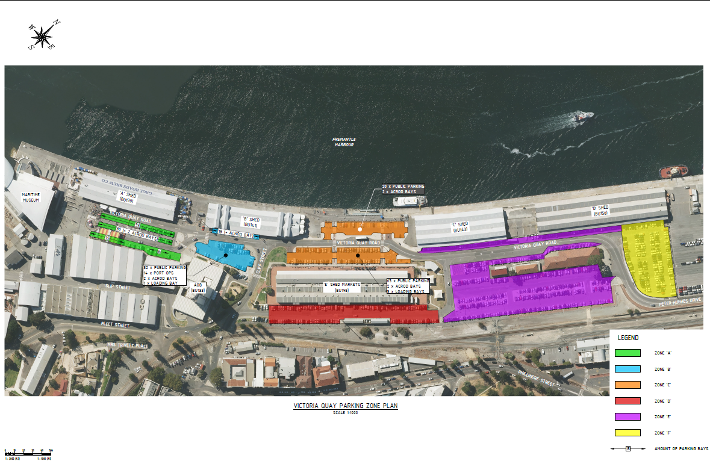
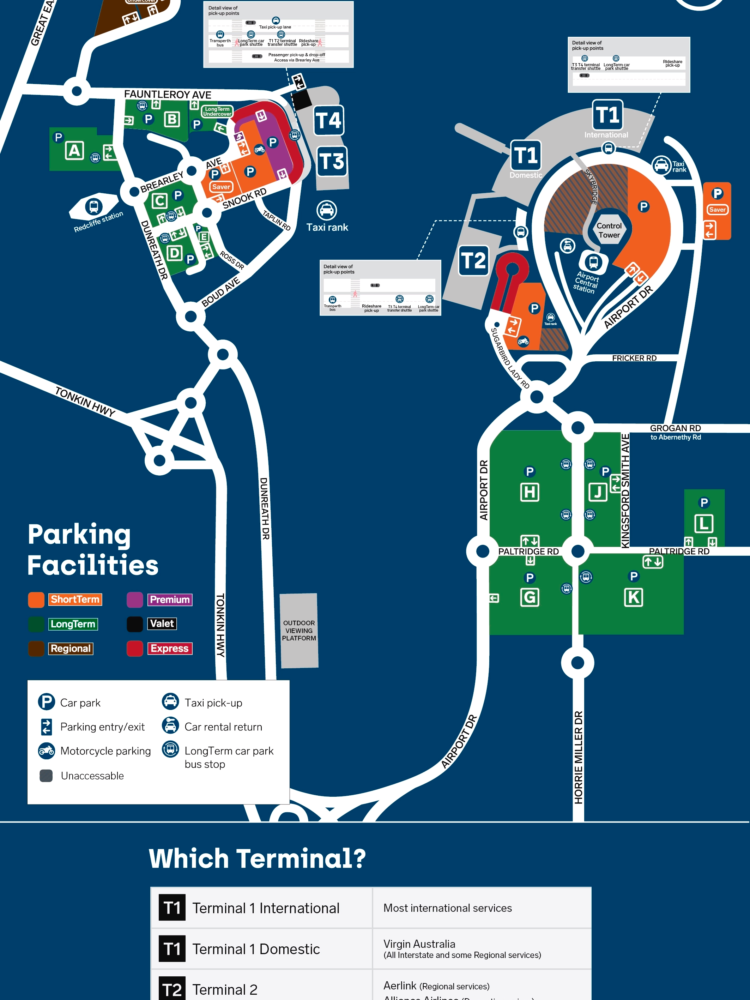

Perth trip plan · 5–9 November 2026
Four nights at Quality Hotel Bayswater · one rental car · three travellers
Travel-ready · updated 5 November: hotel, Busselton 10:00 am, Lake Cave 2:00 pm, Rottnest Express 7:30 am/5:30 pm, Island Explorer and Perth Mint 9:30 am are booked. Download confirmations and QR codes offline. Optional stops are the built-in delay/fatigue buffers.
Saturday ferry parking · use the official zone plan
Google's “Victoria Quay Zone 3” place pin is stale and does not match the current signed zone layout. Navigate to Peter Hughes Drive / Victoria Quay, then follow the physical signs rather than that Google pin.
- First choice: Zone E (purple), the long-stay area east of E Shed and south of C Shed.
- Overflow: Zone F (yellow), at the far eastern end beside D Shed.
- Do not use Zone D (red) for the island day: on Saturday it is limited to three hours.
- After parking, follow the marked pedestrian route west to Rottnest Express at B Shed. Renovation signage and staff will direct you to the operating berth.

Car
Ferry
Island bus loop
Walking trail
Local walk
Train / railway
Stop
Road lines are planning connections, not turn-by-turn navigation. Recheck traffic, weather and ferry status on the day.
Operational reference screenshots
These are the uploaded maps used for the parking decisions. Tap either image to open the full-resolution version before driving.

Detailed daily plans
Loading the detailed itinerary…